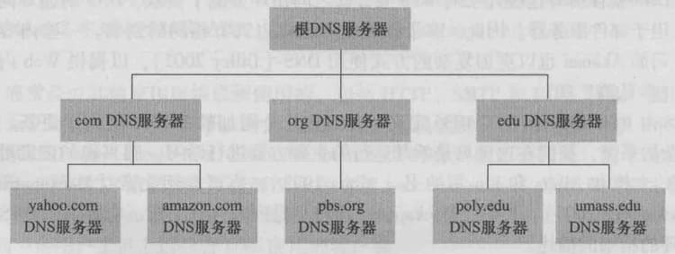
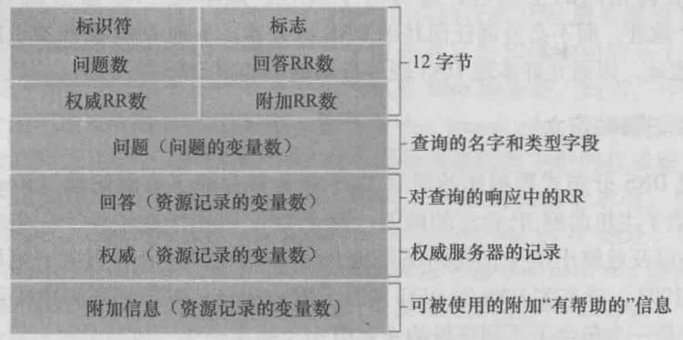
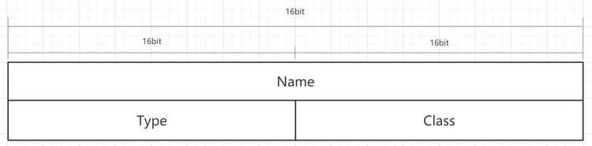
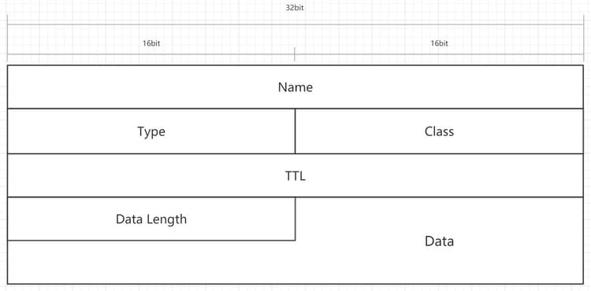

人类能以很多方式来标识，例如我们能够通过出生证明上的名字来标识，能够通过社保卡号码来标识，也能够通过驾驶执照上的号码来标识。
因特网上的主机和人类一样，可以使用多种方式进行标识。主机的一种标识方法是用它的主机名(hostnamae)，如 cnn.com、www.baidu.com 等，这些名字便于记忆也乐于被人们接受。然而主机名并没有提供关于主机在因特网中位置的信息，且路由器很难处理这种由不定长字母数字组成的标识，因此主机通常使用具有层次结构的、更易于处理的IP地址进行标识。
IP地址有着严格的层次结构，它由4个字节组成，其中的每个字节都被句点分隔开来，表示了0~255的十进制数字，如 121.7.106.83 就是一个IP地址。我们说它具有层次结构是因为当我们从左至右扫描它时，我们会得到越来越具体的关于主机位于因特网何处的信息。
人们喜欢便于记忆的主机名标识，而路由器喜欢定长的、有着层次结构的IP地址，为了折衷这些不同的偏好，我们需要一种能进行主机名到IP地址转换的目录服务，这就是域名系统(Domain Name System, DNS)。
DNS提供的服务
DNS是:
- 一个由分层的DNS服务器实现的分布式数据库
- 一个使得主机能够查询分布式数据库的应用层协议
注:
- DNS服务器通常是运行BIND(Berkeley Internet Name Domain)软件的UNIX机器
- 与HTTP、FTP和SMTP一样，DNS协议是应用层协议，该协议运行在UDP之上，使用53号端口
DNS不是一个直接和用户打交道的应用，相反，DNS是为因特网上的用户应用程序以及其他软件提供一种核心功能，即将主机名转换为其背后的IP地址。DNS通过采用了位于网络边缘的客户和服务器实现了关键的名字到地址的转换功能。
除了进行主机名到IP地址的转换外，DNS还提供了一些重要的服务:
- 主机别名: 有着复杂主机规范的主机能拥有一个或者多个别名。应用程序可以调用DNS来获得主机别名对应的规范主机名以及主机的IP地址。
- 邮件服务器别名: 有着复杂主机规范名的邮件服务器也可拥有多个别名，电子邮件应用程序可以调用DNS对提供的邮件服务器别名进行解析，以获得该主机的规范主机名及其IP地址。
- 负载分配: 繁忙的站点通常被冗余分布在多台服务器上，每台服务器均运行在不同的端系统上，每个都有着不同的IP地址，这些IP地址构成了一个IP地址集合被与同一个规范主机名相联系。当客户对映射到某个地址集合的名字发出一个DNS请求时，DNS服务器用IP地址的整个集合进行响应，但在每次响应中，会循环改变集合中各地址的顺序，由于客户机通常总是向IP地址排在最前面的服务器发送HTTP请求报文，因此DNS就在所有这些冗余的Web服务器之间循环分配了负载。
DNS工作机理概述
工作过程概述
从用户主机上调用应用程序的角度来看，DNS是一个提供简单、直接的转换服务的黑盒子: 当用户主机上的某些应用程序需要将主机名转换为IP地址时，这些应用程序将调用位于用户主机上的DNS客户端，并指明需要被转换的主机名，DNS客户端会向网络中发送一个DNS查询报文，经过若干毫秒到若干秒的时延后，用户主机上的DNS会接收到一个提供所希望映射的DNS回答报文，这个映射结果会被传递到调用DNS的应用程序。
分布式、层次数据库
显而易见，对于遍布全球的互联网来说，只使用一个DNS服务器来说是不合理也是不现实的，因为这种集中式设计存在单点故障会导致整个互联网的DNS服务中断、通信容量限制、远距离带来的低速与拥塞、维护困难、不可扩展等诸多问题。因此，DNS采用了分布式的设计方案，事实上DNS是一个在因特网上实现分布式数据库的精彩范例。
为了处理扩展性问题，DNS使用了大量的DNS服务器，它们以层次方式组织，并且分布在全世界范围内。没有一台DNS服务器拥有因特网上所有主机的映射。相反，该映射分布在所有的DNS服务器上。

DNS服务器的部分层次结构
大致来说，有3种类型的DNS服务器:
- 根DNS服务器: 根DNS服务器负责管理互联网的主目录，它维护所有顶级域(DNS)服务器的IP地址。(全世界共有13台根DNS服务器，分为1台主根服务器(美国)和12台辅根服务器(美国9台、英国1台、瑞典1台、日本1台)。
- 顶级域(Top-Level Domain, TLD)DNS服务器: 顶级域(DNS)服务器维护顶级域名(如com、org、edu等)以及所有国家的顶级域名(如cn、uk、jp等)下的权威DNS服务器的IP地址。(注意一台服务器仅负责解析一个顶级域名下的全权威DNS服务器IP地址)
- 权威DNS服务器: 权威DNS服务器负责某顶级域名下的子域的解析工作。在因特网上具有公共可访问主机的每个组织机构必须提供公共可访问的DNS记录，这些记录将这些主机的名字映射为IP地址，一个组织机构的权威DNS服务器收藏了这些DNS记录组织机构可以选择实现自己的权威DNS服务器或者支付费用将这些记录存储在某个服务提供商的权威DNS服务器中。(权威服务器实际上也可以具有一定的层次结构，如某顶级域名的二级域名的权威DNS服务器下可能存在多个三级域名的权威DNS服务器)
(注:每台服务器实际上是一个冗余服务器的网络，以提供安全性和可靠性。)
假定一个DNS客户要决定主机名为 www.amazon.com 的主机的IP地址，粗略来说，将发生下列事件: 客户首先与根服务器之一联系，它将返回顶级域名com的TLD服务器的IP地址，接着该客户与这些TLD服务器之一联系，它将为 amazon.com 返回权威服务器的IP地址，最后客户与 amazon.com 的权威服务器之一联系，它为主机名 www.amazon.com 返回其IP地址。
除了这3类DNS服务器外，还有另一类重要的DNS服务器，称为本地DNS服务器(local DNS server)。一个本地DNS服务器严格来说并不属于DNS服务器的层次结构，但它对DNS服务器的层次结构来说是重要的。每个ISP(网络提供者)都有一台本地DNS服务器，当主机与某个ISP连接时，该ISP提供一台主机的IP地址，该主机具有一台或多台其本地DNS服务器的IP地址。当主机发送DNS请求时，该请求被发往本地DNS服务器，本地DNS服务器起着代理的作用，由它负责与各层DNS服务器进行交互并最终将查询结果返回客户主机。
对DNS查询请求的处理方式一般有递归查询(recursive query)和迭代查询(iterative query)两种。
递归查询是指一台主机发起一个DNS查询请求，每台受到该请求的服务器在查询到下一级服务器的IP地址后不返回而是递归性地将该查询转发到检索到的服务器上，逐一”深入”，最后逐层返回。
迭代查询是指一台主机向一台服务器发起一个DNS查询，服务器在收到查询请求后直接返回检索到的下一级服务器的IP地址而不递归发送查询请求，在主机受到下一级服务器的IP地址后，由主机自行向返回的下一级服务器发送查询请求，不断迭代，直到主机最终受到某权威服务器的IP地址并在发送请求后受到了最终的IP地址。
从理论上讲，任何DNS查询既可以是迭代的也可以是递归的。实践中，查询通常遵循以下模式:从请求主机到本地DNS服务器的查询是递归的，其余的查询是迭代的。
DNS缓存
通过上述的介绍，我们可以看出，当一台主机发送一个DNS查询请求时，该请求将会涉及到至少4个服务器(本地DNS服务器、根DNS服务器、顶级域DNS服务器以及权威DNS服务器)、包含至少8次的DNS报文的发送(与每台服务器的请求交互至少涉及到一次发送和一次返回两个DNS报文)，可以预测出该查询带来的延迟将是相当可观的。实际上，为了改善时延性能并减少因特网上到处传输的DNS报文数量，DNS广泛使用了缓存的技术。
DNS缓存的原理非常简单，在一个请求链中，当某DNS服务器接收到了一个DNS回答时，它能将该回答中的信息缓存在本地服务器中，如果在DNS服务器中缓存了一台主机名/IP地址对，而另一个对相同主机名的查询到达该DNS服务器时，该DNS服务器就能够提供相应的所要求的IP地址，即使它不是该所要求的主机名的权威服务器。
由于主机和主机名与IP地址间的映射并不是永久的，对于每条被缓存的主机名/IP地址对均有一个TTL(Time-To-Live)字段，该字段随时间减小，当某一条缓存的TTL减小为零时，该缓存信息将被丢弃。TTL时间一般由被查询主机名的权威服务器在返回查询结果时连同发送。
DNS记录和报文
资源记录(RR)
共同实现DNS分布式数据库的所有DNS服务器存储了资源记录(Resource Record, RR)，资源记录提供了主机名到IP地址的映射。每个DNS回答报文包含了一条或多条资源记录。
资源记录是一个包含了下列字段的4元组:(Name, Value, Type, TTL)
各字段的含义如下:
- Name: 记录的名称或记录所有者的名称。可以是根域名(@)或子域名(如www)。
- Value: 记录的数据，具体含义随记录的类型变化，如当记录的类型为A时，该字段存储的是主机的IPv4地址。
- Type: 记录的类型,如A表示一条IPv4地址记录。
- TTL: 该条记录的缓存失效时间，注意，该数值并不是恒定的，它会随时间减小，当期减小为零时，该条记录失效。
Name字段部分取值及含义:
| 取值 | 含义 |
|---|---|
| @ | 直接解析主域名，如example.com |
| * | 泛解析，匹配所有其他二级域名，*.example.com |
| 二级域名 | 解析以字段值为二级域名的域名。如字段值为www，则解析www.example.com |
Type字段部分取值及含义:
| 取值 | 含义 |
|---|---|
| A | 表明该记录为一条IPv4地址记录 |
| AAAA | 表明该记录为一条Ipv6地址记录 |
| CNAME | 表明该记录将域名指向另一个域名 |
| MX | 表明该记录为邮件传输代理地址记录 |
| SRV | 表明该记录为服务定位记录 |
| NS | 表明该记录为域名服务器记录 |
| TXT | 指明该记录是文本记录(绝大多数用来做SPF记录，反垃圾邮件) |
关于更多Type类型及各类型下记录的示例可以参考以下连接:
Google Domains Help - About resource records
维基百科 - 域名服务器记录类型列表
DNS报文
DNS报文分为查询报文和回答报文，DNS只有这两种报文，且查询报文和回答报文具有相同的格式。格式如下:

DNS报文格式
DNS报文中，各区域的说明如下:
首部区域
DNS报文中，前12个字节是首部区域，该区域包含如下内容:
各部分的含义为:
- 标识符(ID): 标识符是一个16比特的数，用于标识该查询，这个标识符会被复制到对查询的回答报文中，以便让客户用它来匹配发送的请求和接受到的回答
- 查询/回答标志位(QR): 1比特的查询/回答标志位指出该报文是查询报文(0)还是回答报文(1)
- 查询种类标志(Opcode): 该标志用于表明查询的种类，应答的时候会带有相同的值，其中0代表标准查询、1代表反向查询、2代表服务器状态查询、3-15为保留值暂未使用
- 权威标志位(Authoritative Answer, AA): 当某DNS服务器是锁清名字的权威DNS服务器时，该标志位将被置位
- 截断标志位(TrunCated, TC): 用来表明报文是否被截断，当报文无法被UDP报文容纳下时(报文的大小超过512字节)，该报文会被截断
- 希望递归标志位(Recursion Desired, RD): 如果客户(主机或DNS服务器)在该DNS服务器没有某条记录时希望它执行递归查询，将设置1比特的希望递归标志位
- 递归可用标志位(Recursion Available, RA): 如果该DNS服务器支持递归查询，在它的回答报文中会对1比特的递归可用标志位进行置位
- 零(Zero): 全部被置为0的保留部分，暂未使用
- 应答码(ReplyCODE, Rcode): 用来表示存在的错误，0表示没有错误、1表示报文格式错误(服务器不能理解请求的报文)、2表示服务器失败、3表示名字错误(解析的域名不存在)、4表示没有实现(服务器不支持该查询类型)、5表示拒绝(服务器拒绝应答)、6-15为保留值暂未使用
- 问题记录数(QDCOUNT): 表示问题部分的记录数
- 回答记录数(ANCOUNT): 表示回答部分的记录数
- 权威记录数(NSCOUNT): 表示权威部分的记录数
- 附加记录数(ARCOUNT): 表示附加部分的记录数
查询区域
查询区域指问题部分，该区域包含着正在进行的查询信息。当一个DNS报文是查询报文时，它就会包含该区域。该区域的记录的格式如下:

各部分的含义为:
- 查询名(Name): 指要进行查询的名字，通常是域名，当查询方式为反向查询时则为IP地址
- 查询类型(Type): 指要查询的类型，该类型对应于资源记录类型
- 查询类(Class): 指明查询的类，对于Internet来说一般为IN
应答区域
应答区域指回答部分、权威部分以及附加信息部分。当一个DNS报文是回答报文时，它就会包含该区域。该区域的记录的格式如下:

各部分的含义为:
- 名称(Name): 同查询名，通常是域名
- 类型(Type): 同查询类型，对应资源记录的类型
- 类(Class): 同查询类，对于Internet来说一般为IN
- 生存时间(TTL): 如前所述，表明该记录的缓存有效期
- 数据长度(Data Length): 表明数据部分的长度
- 数据(Data): 存放资源记录的具体数据，比如对于A类型的资源记录，其数据部分存放的就是其IPv4地址
附
DNS报文部分我参考了以下文章，推荐阅读:
深入理解DNS报文格式-夜苍山-CSDN博客
DNS Message Format And Name Compression - Keyboard Banger